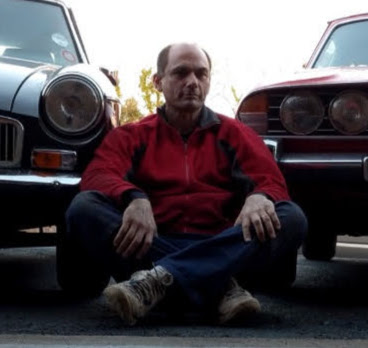

html`<table class="pubs-table">
<thead><tr><th>Year</th><th>Citation</th><th></th></tr></thead>
<tbody>${pubs.map((p) => html`<tr>
<td>${p.year}</td>
<td>${p.authors} (${p.year}). ${p.title}. <em>${p.venue}.</em></td>
<td>${p.link ? html`<a href="${p.link}" target="_blank">[${p.link_label ?? "pdf"}]</a>` : ""}</td>
</tr>`)}</tbody>
</table>`Wordbank is an open database of children’s vocabulary growth, built on data from the MacArthur-Bates Communicative Development Inventories (CDIs) and their adaptations across many languages. It is developed and maintained by the Language and Cognition Lab at Stanford University.
Michael C. Frank
Stanford University
Virginia Marchman
Stanford University
Mika Braginsky
Stanford University
Daniel Yurovsky
Carnegie Mellon University
Danielle Kellier
UPenn
Benny deMayo
Princeton University
Alvin Tan
Stanford University

Henry MehtaHexia Web Services Limited
Who funds Wordbank?
The team would like to thank our supporters! The construction of Wordbank was funded by a grant from the National Science Foundation (#1451577), as well as generous support from the MB-CDI Advisory Board.
Thanks to Brock Ferguson for help with database design and optimization, and to Rose Schneider for logo design.
Publications are rendered from resources/publications.json — edit that file to add a paper.
Links
This site
This site is a static rebuild of the original wordbank.stanford.edu: data are hosted on Redivis and all visualization runs in your browser. Source at langcog/wordbank-datapage.